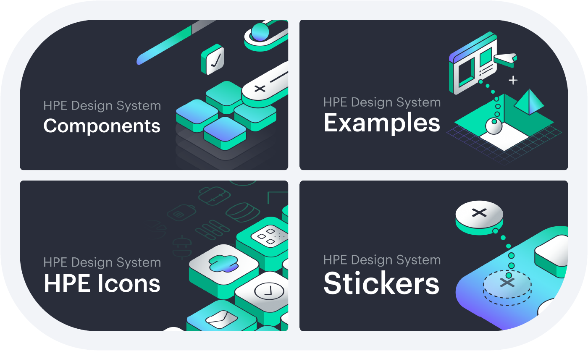
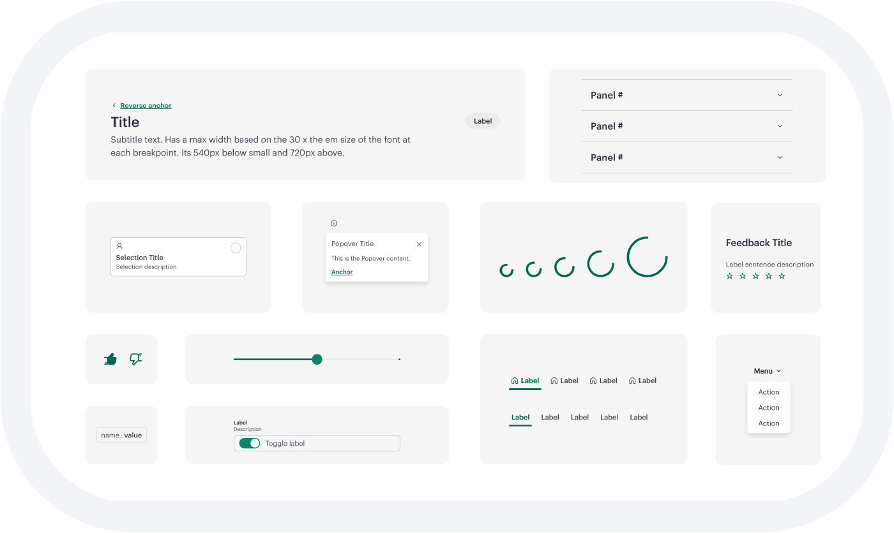
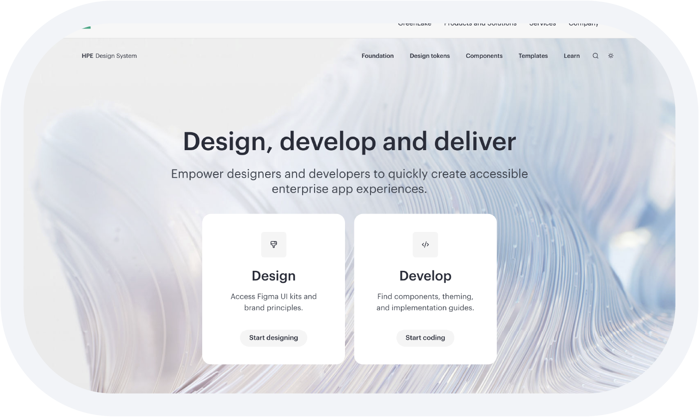
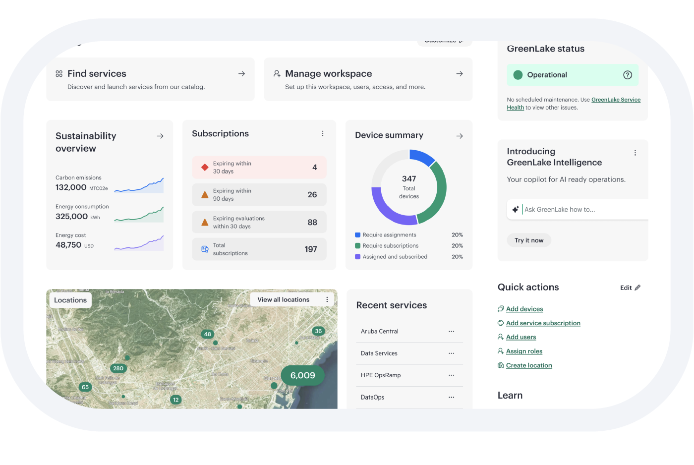
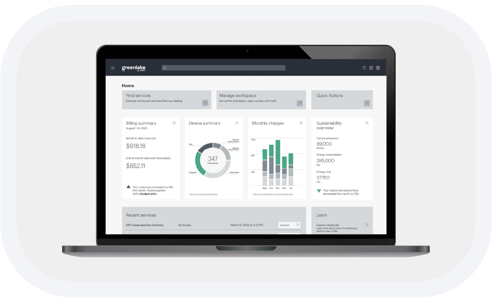
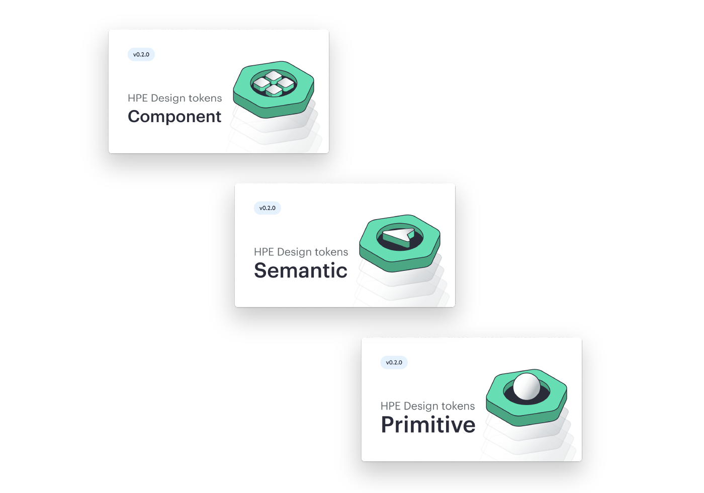
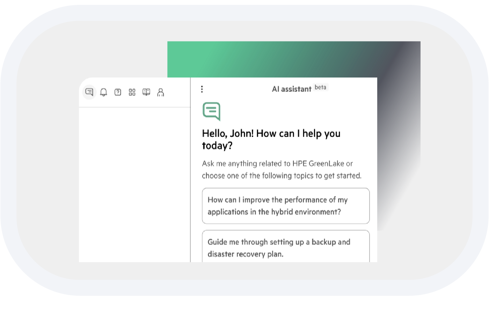

HPE
Driving design system adoption at enterprise scale. Overhaul of design libraries, tokens, code and guidance to enable scalable, consistent product experiences.

Rebuilding a shared foundation
When I joined HPE, the design system was fragmented. Many products had been acquired and built under different design systems or custom solutions, which resulted in inconsistent components, heavy detachment, and growing divergence between Figma and code.
My work focused on rebuilding trust in the system by making clear design decisions and redesigning its foundations: the component library, examples library, sticker sheets and icons library. In parallel, we rebuilt the design system guidance site to support a clearer “journey to one” — a shared source of truth grounded in tokens and practical usage rather than abstract rules.
From components to systems
Looking at the design system as a product, a major issue was that Figma components were often too limiting for designers, which led teams to detach and rebuild them locally.
Instead of enforcing stricter rules, we focused on making the system more flexible and understandable. I contributed to the architecture of the new Figma libraries and token structure, helping align spacing, color, and typography decisions with real product needs. Reducing the gap between Figma and code became a core principle, ensuring designers and developers were working from the same mental model and system constraints.


design-system.hpe.designGuidance that people actually use
The existing documentation was thorough but impractical. It was difficult to scan, hard to apply, and disconnected from day-to-day work. I worked on the redo of the guidance site, redesigning its information architecture to clearly separate tutorials, how-tos, explanations, and reference material.
After that, I implemented the guidance in code using Grommet (React), updating the design system site, including complex anatomy diagrams. I also tested and added accessibility guidance for key components.
The outcome was fewer questions, less friction, and faster decision making across teams, measured in both outreach and usage data.
Design system adoption as a product problem
Adoption didn't happen by mandate — it happened through collaboration. I led enablement and adoption efforts by pairing directly with product designers and developers to align on priorities, tradeoffs, and realistic adoption paths.
Together, we audited existing products, identified gaps, and planned realistic adoption paths. For teams with specific needs, I supported the creation of product-specific auxiliary libraries built on top of design system tokens, allowing teams to move forward without breaking alignment. Feedback from these collaborations continuously flowed back into the system, shaping improvements and priorities.


Outcomes
This hands-on, systems-first approach increased adoption from zero active products to eight teams actively implementing the HPE Design System, each at different stages of maturity. Component detachment was reduced by 41%, signaling increased trust and usability of the system. More importantly, teams began to see the design system not as a constraint, but as an accelerator — a shared foundation that supported scale, consistency, and faster delivery.
Enabling rebrand at scale
When HPE rolled out its new visual identity, the design system work we had already put in place became a force multiplier. Instead of each product team interpreting the rebrand independently, the system acted as a single source of truth. The brand DNA defined by leadership and marketing was translated into tokens, themes, and components that teams could immediately use to ship.
With the Design System encapsulating the new look and feel into the Landmark theme, product teams were able to adopt the rebrand quickly and consistently, reducing rework and avoiding fragmentation. The result was a cohesive visual transition across products, proving the design system’s role not just in consistency, but in enabling change at enterprise scale.


Designing AI as an assistive layer
A key challenge was integrating an AI agent into complex operational tools like GreenLake, where users manage servers and cloud infrastructure. Research showed that making AI too prominent in these high-stakes environments increased anxiety rather than reducing effort. The goal was to position AI as a supporting layer that helped users move faster without obscuring system behavior or user control.
We recommended a flow that starts with a lightweight side chat instead of rigid forms, with the AI asking clarifying questions only when needed. Routing and classification happened in the background, while users reviewed an editable summary before submission. Afterward, the AI shifted to proactive help by surfacing related cases and documentation. Visually, the AI was placed on a lower layer than the core application to reinforce trust and control.
Ultimately, the system’s adoption came not from enforcement but from trust, earned by making the tools, guidance, and components genuinely helpful to teams.